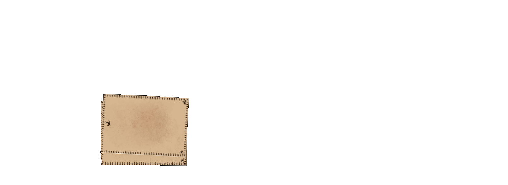

Tarot 2 U

Life is made up of what we think all day long

Life is made up of what we think all day long
소울 카드는 수비학에서 나오는 말이다. 영어로 하면 Numerology이다.
숫자가 가진 의미의 흐름을 배운다고 이해할 수 있다.
타로 수비학적으로 소울 넘버를 구하는 것은 21까지 이다.
자신의 양력 생년월일 숫자 모두 더하고 거기에서 나온 숫자의 각 자리를 더한다.
2자리로 떨어질 때 까지 계산한다. 합이 22가 넘을 경우 각 자리의 수를 또 더한다.
예) 24 : 2+4= 6
1. 과거(원인) - 과거의 상태를 말해줌(행동, 금전, 과거의 잘못, 과거의 노력, 과거의 직업 등)
2. 현재(현재상태) - 현재의 상태를 말해줌(금전, 애정, 직업, 마음 등)
3.미래(결과의 예상)- 미래의 모습 (현재의 상태가 지속되었을 때를 가정한 미래의 상태)
모든 질문에 가능한 배열법이다.
자유자재로 사용하기 어려운 단점이 있다.
각 카드마다 상징이 있다.
1번 - 과거, 2번 - 현재, 3번 - 미래
조언 카드를 뽑아서 활용해도 된다.
1. 현재상황 - 현재상황 그 자체
2. 잠재된 영향력 - 첫번째 카드보다 집중해서 본다. 결과를 바꿀 수 있는 키워드가 숨어있음
3. 과거 - 현재상황이 일어난 배경
4. 드러난 현재의 모습 - 주변인들에게 보이는 겉모습, 실제 모습과 다를 수있다.
5. 결과 - 전체 카드의 해석을 종합하여 질문에 대한 결과를 보여줌
1. 현재
2. 장애
3.숨겨진 영향력 (원인)
4.과거(1년전, 후의 과거)
5.드러난 영향
6.미래
7. 주관적 시선
8. 객관적 시선
9. 희망, 두려움
10. 결과
현재 보여지는 궁합 스프레드는 혼자 뽑아 볼 수 있다.
1,2. 내마음
3. 둘 사이의 관계
4,5. 상대방 마음
6. 결혼운
7. 이별운
8.문제
9. 문제 해결
10.결과
- 3,10이 좋으면 좋음 -
1. 현재 나의 상황이나 상태
2. 현재 상대방 상황이나 상태
3. 현재 두 사람 사이의 관계
4. 이 질문에 대한 근본적인 문제점
5. 문제에 대한 해결 방법
6. 관계의 결과
1. 양자리(화성): 나 자신
2. 황소 자리(금성): 금전 문제
3. 쌍둥이 자리(수성): 형제, 자매(외동일 경우 가까운 이웃)
4. 게자리(달): 부모
5. 사자자리(태양): 자녀(자녀가 없을 경우 취미)
6. 처녀자리(수성): 건강
7. 천칭자리(금성): 배우자
8. 전갈자리(화성,명왕성): 비밀, 귀인(남들한테 보여주고 싶지 않은 나의 비밀)
9. 사수자리(목성):학업
10.염소자리(토성): 직업,일
11. 물병자리(토성, 천왕성): 주변의 객관적 시선
12.물고기자리(목성, 해왕성):장애나 충고
13. 결과: 해당기간의 전체적인 분위